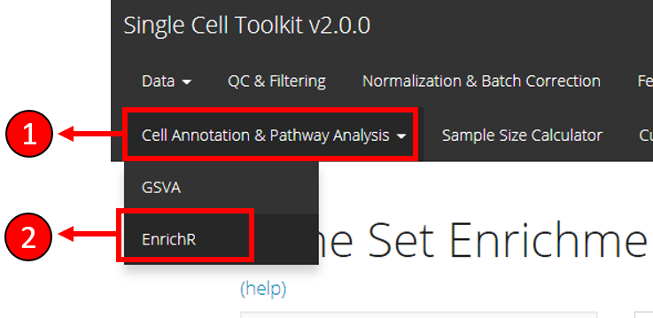
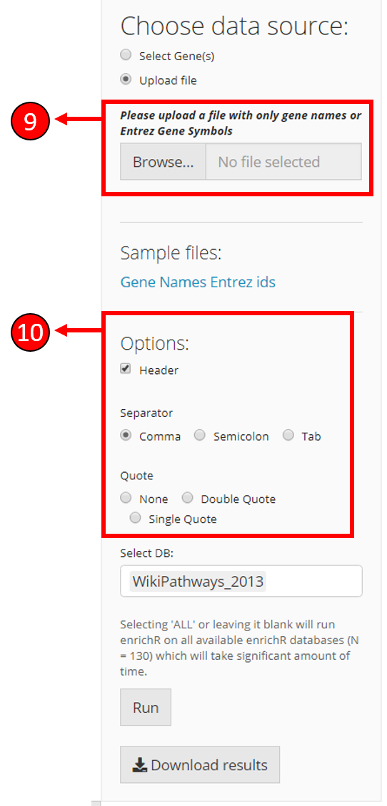

Introduction
EnrichR [1][2] is a GSE (Gene Set Enrichment) method that infers biological knowledge by performing enrichment of input gene sets with curated biologically relevant prior databases that represent biological functions or functional pathways. The singleCellTK toolkit offers an easy to use interface to the EnrichR method and only requires the selection of input genes and the databases against which the genes should be tested.
To view detailed instructions on how to use the method from the toolkit, please select ‘Interactive Analysis’ for using enrichR in shiny application or ‘Console Analysis’ for using this method on R console from the tabs below:
Workflow Guide
An overall workflow guide on how to use EnrichR sub-tab is described below. This workflow guide assumes that the Single Cell Data has already been uploaded through the Import Single Cell Data tab.

- Select Cell Annotation & Pathway Analysis tab from the top menu.
- Select EnrichR option from the drop-down menu.

Select if you want to upload a gene symbol file using the option Upload file or choose the Select Gene(s) option if you want to select genes from the already uploaded data.
If Select Gene(s) option is selected, you can select the genes from the available data here. Alternatively, you can upload a gene file using the options specified in (9) and (10).
Select databases to test the input genes against. Selecting ALL will test against all available databases and may take long time to compute.
Press Run to start computation of enrichment scores.
Once EnrichR computation is complete, results can be saved to local drive by pressing the Download Results button.
Results are displayed in the table for genes that are significant (adjusted p value < 0.05).

If Upload file option is selected in (3), additional options are displayed to upload the gene symbols file. The file path can be selected here.
Once filed is selected in (9), options to select the parameters of the input file are displayed so the input file is correctly parsed.
1. Select genes and databases:
genes <- c("HES1", "PON2", "FBXO44", "DEK", "SOX4", "FBXL16")
databases <- enrichR::listEnrichrDbs()$libraryName2. Run ‘enrichR’ using enrichRSCE function:
enrichRes <- enrichRSCE(inSCE = sce, glist = genes, db = databases)The enrichRSCE function above, takes the following parameters: inSCE: input SingleCellExperiment object glist: vector of input gene names db: a list of databases to test
3. Print results:
print(enrichRes)Example
# Load singleCellTK & pbmc3k example data
library(singleCellTK)
sce <- importExampleData(dataset = "pbmc3k")
# Select genes
genes <- c("HES1", "PON2", "FBXO44", "DEK", "SOX4", "FBXL16")
# Fetch databases
databases <- enrichR::listEnrichrDbs()$libraryName
# Run enrichR
enrichRes <- enrichRSCE(inSCE = sce, glist = genes, db = databases)
# Print the first five results
print(enrichRes[1:5, ])## Database_selected Term
## 7750 LINCS_L1000_Chem_Pert_down LJP006 MCF10A 3H-withaferin-a-3.33
## 7751 LINCS_L1000_Chem_Pert_down LJP006 MCF10A 3H-radicicol-10
## 5530 LINCS_L1000_Chem_Pert_up LJP006 A375 24H-KIN001-043-1.11
## 4156 Genes_Associated_with_NIH_Grants R01GM072915
## 7752 LINCS_L1000_Chem_Pert_down LJP006 A549 24H-BI-2536-0.37
## Overlap P.value Adjusted.P.value Old.P.value Old.Adjusted.P.value
## 7750 3/68 7.0e-07 0.0013233 0 0
## 7751 3/82 1.3e-06 0.0013233 0 0
## 5530 3/91 1.8e-06 0.0040058 0 0
## 4156 2/8 2.1e-06 0.0002791 0 0
## 7752 3/119 4.1e-06 0.0027163 0 0
## Odds.Ratio Combined.Score Genes
## 7750 306.6000 4325.556 PON2;HES1;SOX4
## 7751 252.0886 3413.374 PON2;HES1;SOX4
## 5530 226.2045 2991.617 PON2;HES1;SOX4
## 4156 1665.6667 21777.601 DEK;SOX4
## 7752 171.3621 2127.588 PON2;HES1;SOX4
## link
## 7750 https://clue.io/
## 7751 https://clue.io/
## 5530 https://clue.io/
## 4156 https://grants.nih.gov/grants/oer.htm\n
## 7752 https://clue.io/